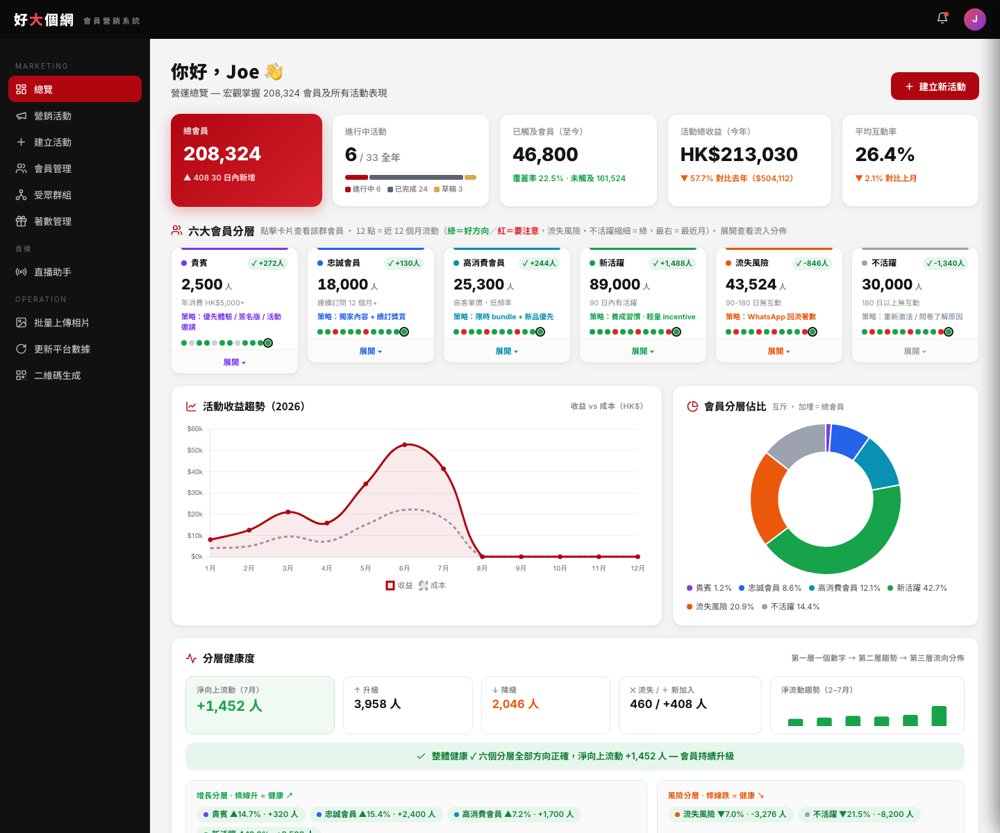
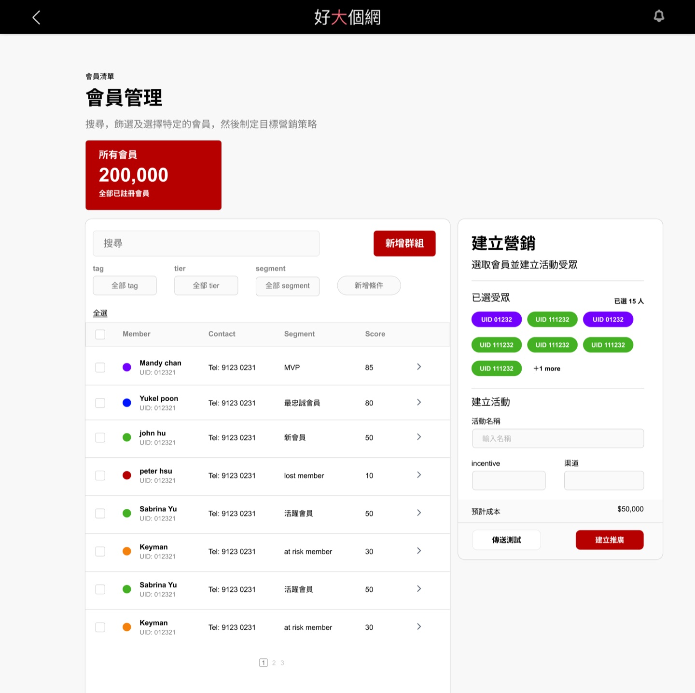
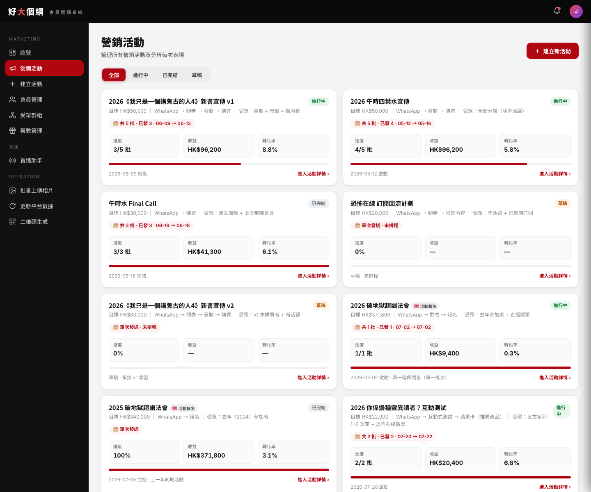
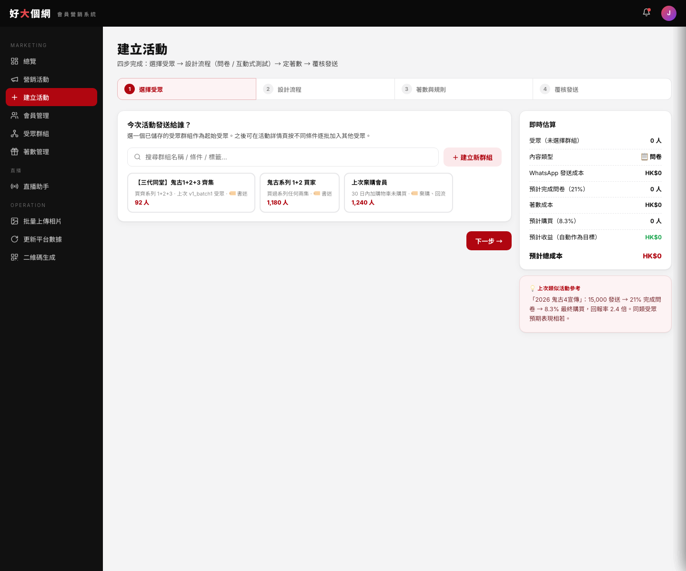
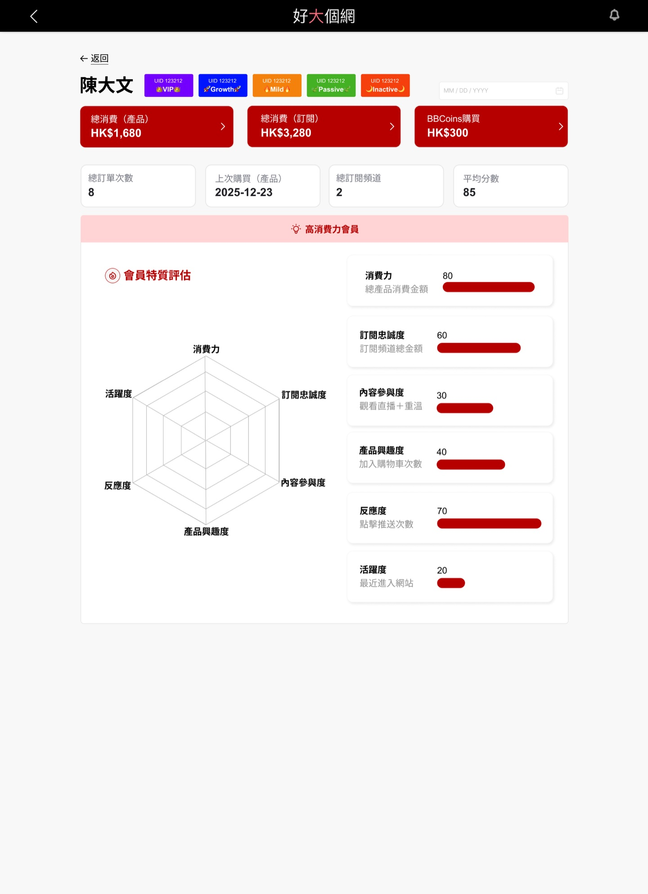
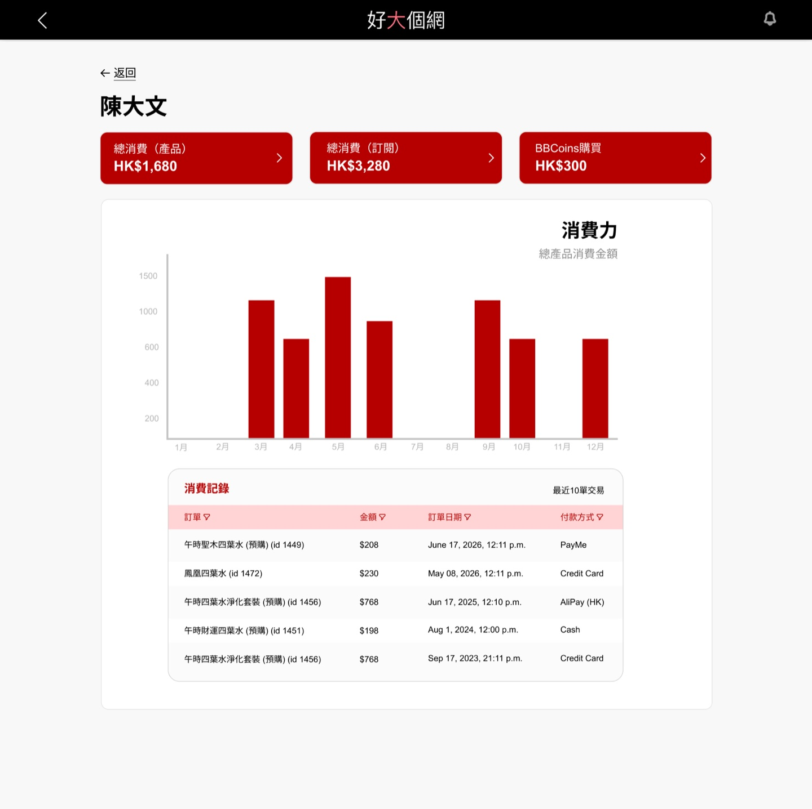

A CRM for audience and campaign decisions.
As UX Designer at Kolorbox Ltd, I designed BigBigAir's CRM prototype, bringing together membership, content, commerce and campaign behaviour. Managers can follow an overall signal to a specific audience and action, with the reasoning visible at each step.
Explore the CRM screen-flow library
The product challenge
好大個網 serves a mixed ecosystem of programmes, subscriptions, live participation, products and events. Useful signals existed, but they were spread across accounts, orders, pixels, surveys and campaign tools. Management could see numbers without always being able to answer the next question: who needs attention, why, and what should we do now?
Managers needed an overview of the modelled 208,324-member population and current campaigns. They also needed to inspect an individual member's behaviour, then use that evidence to create a reusable audience, campaign or service action.
How the CRM works
See the health of the audience
A six-level, mutually exclusive membership ladder makes totals easy to check. Growth in valuable segments is positive; falls in at-risk or inactive members are positive too.
Turn a signal into a cohort
Managers can use segment movement, funnel loss or member behaviour to create a saved audience. I designed manual tagging and group membership flows, including how to add or remove members. Manual filters and the AI filter show the same conditions, which managers can inspect and edit.
Payment and renewal UX
My wider CRM design work covered subscription type, payment gateway and the gap before a member pays or renews. I designed views for payment delays, renewal trends and member-group filters so the team could move from an overview to the audience that needed follow-up.
Launch, learn and act again
Campaigns use reusable groups and are released in deduplicated batches through Woztell. Each batch records its audience, funnel, cost and learning. The next batch can use those findings when the team prepares its brief.
Dashboard and audience tools
The interface connects a management-level view of portfolio health with the audience tools used to act on it. These captures come directly from the working prototype.

Decisions that shaped the system
A single membership ladder
I explored an overlapping value-by-status model, where a VIP could also be dormant. It preserved more nuance, but made totals and campaign ownership harder to explain. I returned to a mutually exclusive ladder so those were easier to follow. Behavioural detail remains available in filters and profiles.
Put the conclusion before the chart
The management reading order is consistent: conclusion first, immediate action second, detail on demand. This is why the product avoids decorative flow diagrams and uses comparable bars, lists and expandable evidence instead.
Separate committed cost from successful redemption
Campaign cost is split into fixed WhatsApp spend and redemption cost. A high redemption cost can mean the offer converted; the avoidable waste is fixed spend sent to people who never acted. The model prevents the interface from labelling success as waste.
Make batch learning part of the workflow
Each batch has its own filters and automatically excludes people reached earlier. Funnel loss, cost and qualitative learning sit together, so the next batch or campaign version can reuse a specific decision rule.
Recorded figures and forecasts
The prototype combines working interaction models with two real analytical cases. Recorded figures describe a source snapshot. Forecast ranges are projections, not results from a released product.
- 7,734
- Lapsed subscribers in the 24 Jul 2026 source snapshot
- 899
- Members inside the first 30-day recovery window
- 149
- Previous-year event buyers identified for win-back
- HK$371.8K
- Recorded 2025 event revenue represented by that cohort
The churn model also identified 956 high-commitment lapsed subscribers and an average of approximately 483 new lapses per month. A separate event survey recorded 111 responses, four self-reported registrations and approximately HK$9,400 in attributed revenue at the time of the snapshot.
Campaign comparison and setup
The evidence stays visible inside the operating flow: compare active campaigns, choose an audience, estimate cost and move into a structured launch without leaving the product.


The product surface
- Management dashboard: segment health, movement, campaign status and comparable performance
- Audience system: search, manual and AI-assisted filters, reusable groups, subgrouping and bulk tags
- Campaign builder: audience, content journey, incentive rules, review and batch launch
- Campaign intelligence: total and per-batch funnels, deduplication, costs, promotion-code tracking and learning
- Member profile: commercial value, content participation, pixel timeline and next-best-action context
- Live assistant: glanceable iPad view that overlays member context on the conversation Edmond is already following
Member profiles
Segments help managers set priorities. Each profile keeps the purchase, subscription and participation evidence they need before acting on an individual member.


Iterations that improved clarity
From checkbox editing to a directional transfer
An early single-list editor made it hard to understand whether a member was being added, retained or removed. I replaced it with a two-column candidate-to-group transfer, keeping additions and removals visible until save.
From separate AI and manual filters to one explainable model
The AI assistant now translates a request into the same filter rows used by the manual interface. A manager can inspect, edit or delete each condition before applying it.
From campaign totals to an inspectable funnel
Each funnel step opens a list of people who completed it or dropped out before it. Managers can tag that cohort, save it or use it to start the next batch.
My contribution
Alongside the CRM prototype, I used survey feedback and audience selection to plan and run quizzes, workshop promotions and WhatsApp campaigns. I prepared campaign content and follow-up around what each audience needed.
- Product model: I modelled audience health, campaigns, individual evidence and live use as one operating system
- Decision design: I presented numbers with their meaning, cost logic and the next action
- Iteration: I discarded models and interactions that left the direction of an action unclear
- Handoff: I documented data contracts, edge cases, language rules, handoff details and regression checks alongside the prototype
Privacy note: member-level source records are intentionally not reproduced. Portfolio evidence is limited to mock interface data and anonymised aggregate analysis.